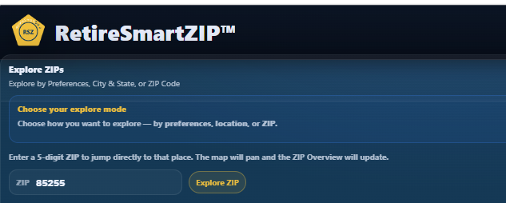

Start with a ZIP
Pick a ZIP and instantly see climate, cost, healthcare access, setting, and local retirement context.
Think in ZIP codes, not just cities. Use housing, climate, healthcare access, lifestyle patterns, cost signals, and local context to narrow your options with confidence.
Two ZIPs in the same city can tell completely different retirement stories. Compare housing, healthcare access, taxes, climate, lifestyle patterns, and local context when exploring where retirement could work for you.
Pick a ZIP and instantly see climate, cost, healthcare access, setting, and local retirement context.

Jump directly into a ZIP code or explore by city, state, region, and retirement priorities.

Explore daily-life structure, recreation patterns, water orientation, and local lifestyle environments.
Our new Lifestyle Intelligence domain helps reveal differences in daily-life structure, recreation patterns, water orientation, healthcare access, housing, and local retirement context across nearby ZIPs.
We tested a real retirement-income scenario using ZIP-level data to show how location changes the answer.
Browse ZIP-level retirement insights, comparisons, and Lifestyle Intelligence articles from across the country.
Start wherever you feel most comfortable — there’s no single right way to begin.
Start with lifestyle and priorities to discover places that may fit how you want to live.
Begin with locations you already know and move into nearby ZIPs worth a closer look.
Jump directly into any ZIP to review housing, climate, and healthcare context instantly.
RetireSmartZIP helps you explore whether a place could work for retirement by comparing ZIP-level housing, climate, healthcare access, lifestyle environment, community context, and cost signals before moving deeper into planning.
Start with the explorer, review the facts about a place, and narrow your list before deeper retirement decisions.
Use the map, preferences, city/state search, or direct ZIP search to move from broad geography into specific places worth a closer look.
See housing, climate, healthcare access, community context, and cost signals for each ZIP without digging through multiple sources or forcing an immediate decision.
Use the explorer to reduce noise and identify the locations worth deeper follow-up as your retirement thinking evolves.
Check housing, climate, healthcare access, lifestyle environment, community context, and cost signals in seconds.
RetireSmartZIP combines six retirement intelligence domains to help you explore where retirement could work.
Review ZIP overview, setting, housing context, and the local starting point for deeper exploration.
Understand temperature, rainfall, seasonal patterns, and climate comfort in practical terms.
Review hospital proximity, clinician supply, and care access signals before digging deeper.
Compare population, retiree concentration, and local context that can shape day-to-day fit.
Explore taxes, affordability signals, and ZIP-level cost context alongside housing data.
Explore daily-life structure, recreation patterns, water orientation, and lifestyle environment.
No. This first release is an exploration tool. It helps you understand places and narrow options—it does not tell you where to retire.
This tool uses selected ZIP-level housing, climate, healthcare, lifestyle, and local context data to support orientation and comparison.
The explorer focuses on ZIP codes within the RetireSmartZIP universe—locations with sufficient data and practical retirement relevance. If a ZIP is not shown, nearby ZIPs may provide the closest available context.